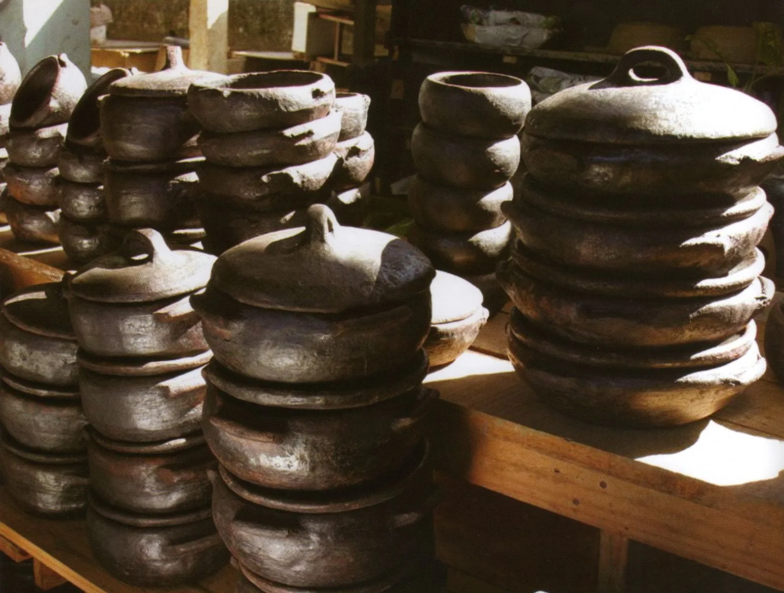
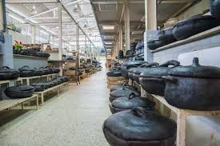
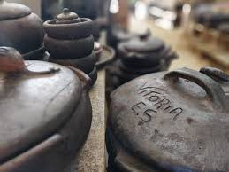

Paneleiras de Goiabeiras
As Paneleiras de Goiabeiras representam uma das tradições culturais mais importantes do Espírito Santo. O ofício é passado de geração em geração e faz parte da identidade cultural capixaba.
As panelas de barro são produzidas artesanalmente no bairro Goiabeiras, em Vitória, utilizando técnicas tradicionais que existem há séculos.
Esse trabalho é reconhecido como Patrimônio Cultural Brasileiro e é fundamental para a preservação da culinária típica do estado.
Curiosidades
- O ofício das Paneleiras é reconhecido pelo IPHAN.
- As técnicas são transmitidas entre gerações.
- A argila utilizada vem do Vale do Mulembá.
- A secagem das peças ocorre naturalmente ao sol.
- A moqueca capixaba é tradicionalmente preparada nessas panelas.
Informações Gerais
- Localização: Goiabeiras, Vitória - ES
- Categoria: Patrimônio Cultural
- Reconhecimento: IPHAN
- Produção: Artesanal
- Produto Principal: Panelas de barro

